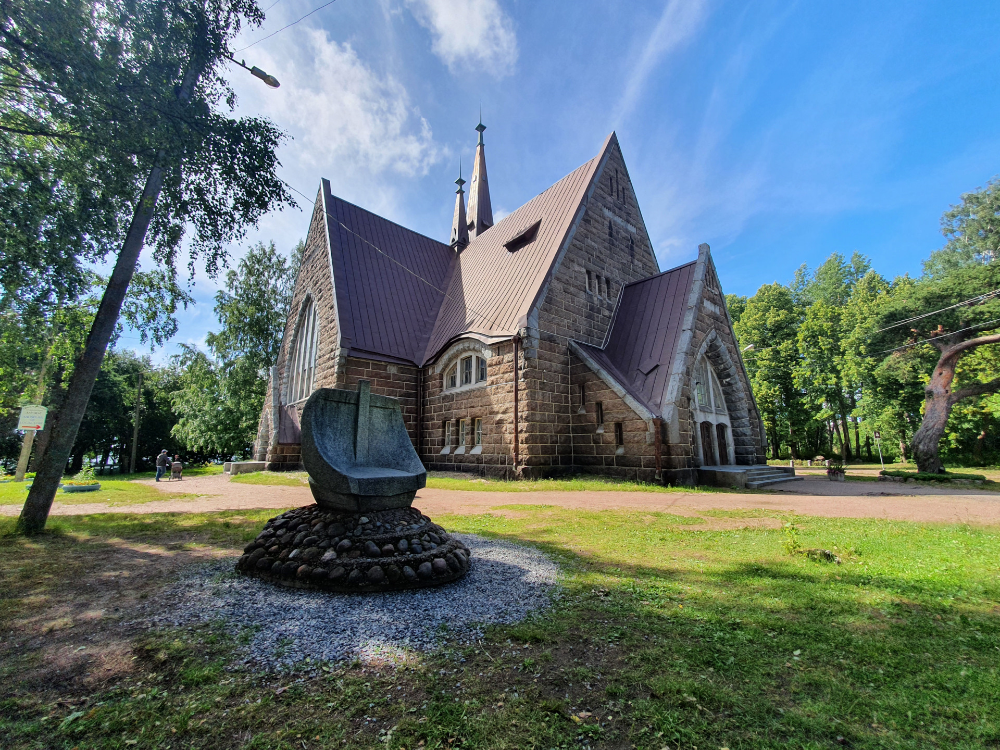

∧
Приморск
Приморск - небольшой город в Выборгском районе Ленинградской области. Расположился вокруг закрытой бухты Коттерлахти пролива Бьеркезунд Финского залива. У нас красивая природа, километры песчаных пляжей, сосновый бор, огромные выглаженные ледником валуны. Весной и осенью у наших берегов останавливаются дикие лебеди.